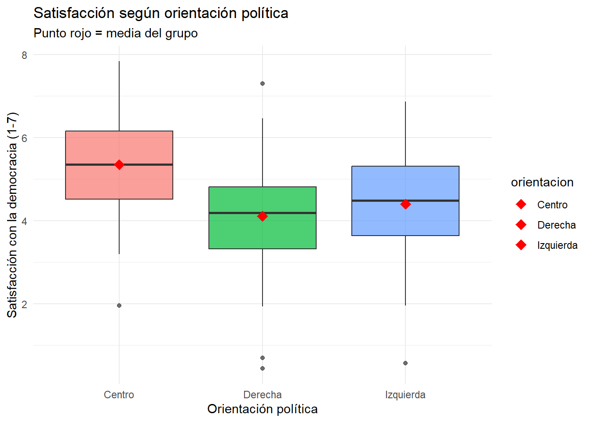

Elegir la prueba correcta para comparar medias según tu situación
Realizar e interpretar pruebas t para uno y dos grupos
Distinguir cuándo usar pruebas para muestras independientes vs pareadas
Usar ANOVA cuando tienes más de dos grupos
Interpretar los resultados en lenguaje accesible
10.1 ¿Por qué comparar medias?
Una de las preguntas más frecuentes en ciencias sociales es si diferentes grupos difieren en alguna característica. Por ejemplo:
¿Ganan más los hombres que las mujeres? (diferencia de ingresos)
¿Cambió la satisfacción con la democracia después de una crisis? (antes/después)
¿Hay diferencias en participación electoral entre regiones? (múltiples grupos)
Para responder estas preguntas, necesitamos comparar promedios (medias) entre grupos y determinar si las diferencias observadas son estadísticamente significativas o podrían deberse al azar del muestreo.
10.2 Eligiendo la prueba correcta
Antes de analizar, identifica tu situación:
Pregunta
Situación
Prueba
¿Mi muestra difiere de un valor conocido?
Un grupo vs valor teórico
t de una muestra
¿Difieren dos grupos independientes?
Hombres vs mujeres, tratados vs control
t de dos muestras
¿Cambió algo antes y después?
Mismas personas medidas dos veces
t pareada
¿Difieren tres o más grupos?
Regiones, niveles educativos, etc.
ANOVA
10.3 Prueba t para una muestra
Esta prueba responde: ¿La media de mi muestra difiere de un valor de referencia?
10.3.1 Ejemplo: Confianza institucional regional
Supongamos que el promedio nacional de confianza en las instituciones es 5.0 (en una escala de 1 a 10). Queremos saber si una región específica tiene un nivel diferente.
# Datos de una regiónset.seed(2024)confianza_region <-rnorm(80, mean =4.3, sd =1.8)# Prueba t: ¿difiere de 5.0?resultado <-t.test(confianza_region, mu =5.0)resultado
One Sample t-test
data: confianza_region
t = -3.828, df = 79, p-value = 0.0002572
alternative hypothesis: true mean is not equal to 5
95 percent confidence interval:
3.791357 4.618295
sample estimates:
mean of x
4.204826
10.3.2 ¿Cómo interpretar este resultado?
1. Las medias:
mean of x
4.299
La media de nuestra muestra es 4.3, mientras que el valor de referencia es 5.0.
2. El intervalo de confianza:
95 percent confidence interval:
3.893 4.706
Estamos 95% seguros de que la media verdadera de la región está entre 3.9 y 4.7. Como este intervalo no incluye el 5.0, hay evidencia de que la región difiere del promedio nacional.
3. El p-value:
p-value = 0.0003
Como p < 0.05, la diferencia es estadísticamente significativa. Podemos concluir que la confianza institucional en esta región es significativamente menor que el promedio nacional.
TipInterpretación en lenguaje simple
“La confianza institucional promedio en la región (4.3) es significativamente menor que el promedio nacional de 5.0 (t = -3.82, p < 0.001). El intervalo de confianza al 95% [3.9, 4.7] no incluye el valor nacional, confirmando esta diferencia.”
10.4 Prueba t para dos muestras independientes
Esta prueba responde: ¿Dos grupos tienen medias diferentes?
Se llama “independientes” porque los grupos no están relacionados entre sí: diferentes personas, diferentes países, etc.
10.4.1 Ejemplo: Brecha salarial de género
Comparemos los ingresos promedio entre hombres y mujeres:
# Datos simulados de ingresos (en miles de pesos)set.seed(2024)ingresos_hombres <-rlnorm(150, meanlog =log(750), sdlog =0.6)ingresos_mujeres <-rlnorm(150, meanlog =log(650), sdlog =0.6)# Prueba t para dos muestras independientesresultado <-t.test(ingresos_hombres, ingresos_mujeres)resultado
Welch Two Sample t-test
data: ingresos_hombres and ingresos_mujeres
t = 0.7294, df = 297.17, p-value = 0.4663
alternative hypothesis: true difference in means is not equal to 0
95 percent confidence interval:
-71.76787 156.29638
sample estimates:
mean of x mean of y
865.2076 822.9434
10.4.2 Interpretando el resultado
Las medias de cada grupo:
mean of x mean of y
815.4 705.2
Los hombres ganan en promedio $815 mil, las mujeres $705 mil.
La diferencia y su intervalo de confianza:
95 percent confidence interval:
12.51 207.92
La diferencia estimada es de aproximadamente $110 mil (815 - 705). El intervalo de confianza indica que la diferencia verdadera está entre $12 mil y $208 mil. Como el intervalo no incluye el cero, la diferencia es significativa.
El p-value: Como p < 0.05, concluimos que existe una diferencia estadísticamente significativa en los ingresos promedio entre hombres y mujeres.
# Visualizacióndatos_genero <-data.frame(ingreso =c(ingresos_hombres, ingresos_mujeres),genero =factor(c(rep("Hombres", 150), rep("Mujeres", 150))))ggplot(datos_genero, aes(x = genero, y = ingreso, fill = genero)) +geom_boxplot(alpha =0.7) +stat_summary(fun = mean, geom ="point", shape =18, size =4, color ="red") +scale_fill_manual(values =c("#3498db", "#e74c3c")) +labs(x ="", y ="Ingreso mensual (miles de $)",title ="Distribución de ingresos por género",subtitle ="El diamante rojo indica la media de cada grupo") +theme_minimal() +theme(legend.position ="none")
El numerador es la diferencia de medias observada. El denominador es el error estándar de esa diferencia, que depende de las varianzas y tamaños de ambos grupos.
R usa por defecto la corrección de Welch, que no asume varianzas iguales entre grupos. Esta es la opción recomendada en la mayoría de los casos.
10.5 Prueba t pareada
Esta prueba responde: ¿Cambió algo antes y después en las mismas personas?
Se usa cuando las observaciones están pareadas o emparejadas: las mismas personas medidas en dos momentos, gemelos, pares de casos similares, etc.
10.5.1 ¿Por qué es diferente a la prueba de dos muestras?
Cuando medimos a las mismas personas dos veces, las observaciones no son independientes: una persona con alta satisfacción “antes” probablemente tendrá alta satisfacción “después”. La prueba pareada aprovecha esta información, analizando la diferencia individual de cada persona.
10.5.2 Ejemplo: Evaluación de una intervención
Medimos percepción de seguridad antes y después de un programa policial en el barrio:
# Mismas 50 personas, medidas antes y despuésset.seed(123)antes <-rnorm(50, mean =4.2, sd =1.5)despues <- antes +rnorm(50, mean =0.8, sd =1.0) # Mejora promedio de 0.8# Prueba t pareadaresultado <-t.test(despues, antes, paired =TRUE)resultado
Paired t-test
data: despues and antes
t = 7.391, df = 49, p-value = 1.649e-09
alternative hypothesis: true mean difference is not equal to 0
95 percent confidence interval:
0.689083 1.203734
sample estimates:
mean difference
0.9464083
10.5.3 Interpretando el resultado
La diferencia promedio:
mean difference
0.841
En promedio, la percepción de seguridad aumentó 0.84 puntos después de la intervención.
Intervalo de confianza de la diferencia:
95 percent confidence interval:
0.547 1.135
Estamos 95% seguros de que el verdadero efecto de la intervención está entre 0.55 y 1.14 puntos. Como el intervalo no incluye el cero, el efecto es significativo.
El p-value: Como p < 0.05, concluimos que la intervención tuvo un efecto estadísticamente significativo en la percepción de seguridad.
AdvertenciaCuidado: Estadístico ≠ Causal
Un resultado significativo no prueba que la intervención causó el cambio. Podrían haber ocurrido otros eventos durante el período (nuevas leyes, cambios económicos, etc.). Para afirmar causalidad necesitamos un grupo de control que no recibió la intervención.
10.6 ANOVA: Comparando más de dos grupos
¿Qué pasa si quieres comparar tres o más grupos? No puedes simplemente hacer múltiples pruebas t, porque cada prueba tiene 5% de probabilidad de error tipo I. Con muchas comparaciones, los errores se acumulan.
El ANOVA (Analysis of Variance) resuelve esto evaluando todas las diferencias simultáneamente con una sola prueba.
10.6.1 La pregunta que responde ANOVA
¿Hay al menos un grupo cuya media difiere de los demás?
Si p < 0.05: Sí, hay diferencias significativas entre los grupos
Si p ≥ 0.05: No podemos concluir que haya diferencias
NotaImportante
ANOVA NO te dice cuáles grupos difieren, solo que al menos uno es diferente. Para saber cuáles, necesitas pruebas post-hoc (ver sección avanzada).
10.6.2 Ejemplo: Satisfacción por orientación política
Comparemos la satisfacción con la democracia entre personas de izquierda, centro y derecha:
# Datos simuladosset.seed(2024)n_grupo <-100datos_anova <-data.frame(satisfaccion =c(rnorm(n_grupo, mean =4.5, sd =1.2), # Izquierdarnorm(n_grupo, mean =5.2, sd =1.1), # Centrornorm(n_grupo, mean =4.0, sd =1.3) # Derecha ),orientacion =factor(rep(c("Izquierda", "Centro", "Derecha"), each = n_grupo)))# ANOVA de una víamodelo_anova <-aov(satisfaccion ~ orientacion, data = datos_anova)summary(modelo_anova)
Df Sum Sq Mean Sq F value Pr(>F)
orientacion 2 84.1 42.06 30.65 7.9e-13 ***
Residuals 297 407.6 1.37
---
Signif. codes: 0 '***' 0.001 '**' 0.01 '*' 0.05 '.' 0.1 ' ' 1
10.6.3 Interpretando el output de ANOVA
Df Sum Sq Mean Sq F value Pr(>F)
orientacion 2 73.5 36.75 25.7 2.45e-11 ***
Residuals 297 424.6 1.43
Lo más importante es el p-value (Pr(>F)): Como p < 0.05 (de hecho, p < 0.001), concluimos que hay diferencias significativas en satisfacción con la democracia entre los grupos políticos.
El estadístico F (25.7): Mide cuánta variación hay “entre grupos” comparada con la variación “dentro de grupos”. Valores más altos indican diferencias más claras.
ggplot(datos_anova, aes(x = orientacion, y = satisfaccion, fill = orientacion)) +geom_boxplot(alpha =0.7, show.legend =FALSE) +stat_summary(fun = mean, geom ="point", shape =18, size =4, color ="red") +scale_fill_manual(values =c("#2ecc71", "#9b59b6", "#e74c3c")) +labs(x ="Orientación política",y ="Satisfacción con la democracia (1-7)",title ="Satisfacción según orientación política",subtitle ="El diamante rojo indica la media de cada grupo") +theme_minimal()

Satisfacción con la democracia según orientación política
El gráfico muestra que el grupo de centro tiene la mayor satisfacción, seguido de izquierda, y derecha tiene la menor.
Nota🎓 Avanzado: Comparaciones post-hoc
Si ANOVA indica diferencias significativas, ¿entre qué grupos específicos están? Las pruebas post-hoc responden esto controlando por comparaciones múltiples.
# Comparaciones post-hoc de TukeyTukeyHSD(modelo_anova)
Tukey multiple comparisons of means
95% family-wise confidence level
Fit: aov(formula = satisfaccion ~ orientacion, data = datos_anova)
$orientacion
diff lwr upr p adj
Derecha-Centro -1.2410478 -1.63127340 -0.8508221 0.0000000
Izquierda-Centro -0.9471902 -1.33741581 -0.5569645 0.0000001
Izquierda-Derecha 0.2938576 -0.09636805 0.6840832 0.1801856
Cómo leer el resultado:
diff: Diferencia de medias entre los dos grupos
lwr y upr: Intervalo de confianza al 95%
p adj: p-value ajustado por comparaciones múltiples
Si el intervalo no incluye el cero (o p adj < 0.05), la diferencia entre esos dos grupos es significativa.
10.6.4 Alternativas no paramétricas
Cuando los supuestos no se cumplen (especialmente con muestras pequeñas), usamos pruebas que no asumen distribución normal:
Prueba paramétrica
Alternativa no paramétrica
En R
t de una muestra
Wilcoxon signed-rank
wilcox.test(x, mu = valor)
t de dos muestras
Mann-Whitney U
wilcox.test(x, y)
t pareada
Wilcoxon pareada
wilcox.test(x, y, paired = TRUE)
ANOVA
Kruskal-Wallis
kruskal.test(y ~ grupo)
10.7 Supuestos de las pruebas
Las pruebas t y ANOVA asumen ciertas condiciones. Si no se cumplen, los resultados pueden ser poco confiables.
10.7.1 Los tres supuestos principales
1. Independencia de las observaciones
Las observaciones no deben estar relacionadas entre sí. Por ejemplo, si encuestas a miembros de la misma familia, sus respuestas no son independientes.
Este es el supuesto más importante. Si no se cumple, los resultados pueden ser muy sesgados y las alternativas no paramétricas no ayudan.
2. Normalidad
Los datos en cada grupo deberían distribuirse aproximadamente como una curva normal.
En la práctica: Este supuesto es menos crítico con muestras grandes (n > 30 por grupo) gracias al teorema del límite central. Las pruebas t y ANOVA son bastante robustas a desviaciones de normalidad.
3. Homogeneidad de varianzas
Los grupos deberían tener dispersiones similares.
En la práctica: R usa por defecto la corrección de Welch en t.test(), que no asume varianzas iguales. Para ANOVA, existen versiones robustas si este supuesto es problemático.
TipRegla práctica
Con muestras grandes (n > 30 por grupo) y sin problemas graves de independencia, las pruebas t y ANOVA funcionan bien incluso con datos que no son perfectamente normales.
Resumen
La comparación de medias permite evaluar si las diferencias observadas entre grupos son estadísticamente significativas o podrían deberse al azar muestral. La prueba t compara dos grupos; ANOVA extiende la lógica a tres o más grupos.
La elección de la prueba depende del diseño: t de una muestra para comparar contra un valor conocido, t de dos muestras para grupos independientes, t pareada para mediciones repetidas en los mismos sujetos. Cuando ANOVA es significativo, las pruebas post-hoc identifican qué pares de grupos difieren.
Situación
Prueba
En R
Una muestra vs valor conocido
t de una muestra
t.test(x, mu = valor)
Dos grupos independientes
t de dos muestras
t.test(x, y)
Antes/después (mismas personas)
t pareada
t.test(x, y, paired = TRUE)
Tres o más grupos
ANOVA
aov(y ~ grupo)
Claves para interpretar:
p-value < 0.05: La diferencia es estadísticamente significativa
Intervalo de confianza que no incluye 0: Hay diferencia significativa
ANOVA significativo: Al menos un grupo difiere, pero no dice cuál
ImportanteRecuerda
Significancia estadística ≠ Importancia práctica. Una diferencia de $10 pesos puede ser “significativa” con muestras grandes, pero irrelevante en la práctica. Siempre reporta el tamaño del efecto (la diferencia real) además del p-value.
Lecturas recomendadas
Fundamentos de comparación de grupos:
Agresti, A., & Finlay, B. (2009). Statistical Methods for the Social Sciences (4th ed.). Pearson. → Capítulo 7 cubre pruebas t y comparación de medias entre dos grupos con claridad y ejemplos aplicados.
Inferencia causal mediante comparación de grupos:
Llaudet, E., & Imai, K. (2022). Data Analysis for Social Science: A Friendly and Practical Introduction. Princeton University Press. → Capítulo 3 sobre causalidad conecta comparación de medias con diseños experimentales y cuasi-experimentales.
ANOVA y diseños más complejos:
Maxwell, S. E., Delaney, H. D., & Kelley, K. (2018). Designing Experiments and Analyzing Data: A Model Comparison Perspective (3rd ed.). Routledge. → Tratamiento comprehensivo de ANOVA y diseños factoriales para investigadores avanzados.
Ejercicios
1. Prueba t de una muestra
Una escala de confianza interpersonal tiene media nacional de 5.5 (escala 1-10). Tienes datos de una región específica:
set.seed(111)confianza_region <-rnorm(80, mean =4.8, sd =2.0)
¿Cuál es la pregunta de investigación?
Realiza la prueba t con t.test()
Interpreta el p-value: ¿hay diferencia significativa?
Interpreta el intervalo de confianza
Escribe una oración resumiendo el resultado
2. Prueba t de dos muestras
Comparamos participación cívica entre hombres y mujeres:
set.seed(222)civic_hombres <-rnorm(100, mean =3.2, sd =1.5)civic_mujeres <-rnorm(110, mean =3.8, sd =1.4)
Realiza la prueba t para muestras independientes
¿Cuál grupo tiene mayor participación cívica?
¿La diferencia es estadísticamente significativa?
Crea un boxplot comparando ambos grupos
¿Qué tan grande es la diferencia en términos prácticos?
3. ¿Cuándo usar prueba pareada?
Indica si deberías usar una prueba t pareada o de muestras independientes:
Comparar notas de estudiantes antes y después de un curso
Comparar satisfacción laboral entre empresas públicas y privadas
Comparar presión arterial de pacientes antes y después de un tratamiento
Comparar ingresos entre graduados de dos universidades diferentes
Comparar actitud hacia la inmigración en las mismas personas en 2020 y 2024
4. Prueba t pareada
Mediciones de actitud hacia inmigración antes y después de ver un documental:
set.seed(333)n <-60antes <-rnorm(n, mean =50, sd =15)despues <- antes +rnorm(n, mean =5, sd =8)
¿Por qué es apropiada una prueba pareada aquí?
Realiza la prueba con t.test(..., paired = TRUE)
¿Cuál es el cambio promedio?
¿El cambio es estadísticamente significativo?
¿Podemos concluir que el documental causó el cambio? ¿Por qué?
5. ANOVA
Satisfacción con servicios públicos según región:
set.seed(444)datos_anova <-data.frame(satisfaccion =c(rnorm(50, mean =5.5, sd =1.2),rnorm(60, mean =4.8, sd =1.3),rnorm(55, mean =5.2, sd =1.1),rnorm(45, mean =4.5, sd =1.4) ),region =rep(c("Norte", "Centro", "Sur", "Metropolitana"), c(50, 60, 55, 45)))
Realiza ANOVA con aov()
¿Hay diferencias significativas entre regiones?
Crea un boxplot de satisfacción por región
¿Cuál región tiene mayor satisfacción? ¿Cuál menor?
Si el ANOVA es significativo, ¿qué prueba adicional necesitas para saber cuáles regiones difieren específicamente?
6. Aplicación
Busca un ejemplo de tu interés donde necesites comparar medias entre grupos:
Describe los grupos que quieres comparar
¿Qué variable quieres comparar?
¿Qué prueba usarías y por qué?
¿Qué resultado esperarías encontrar?
Si la diferencia fuera significativa, ¿qué conclusiones podrías sacar? ¿Cuáles no?